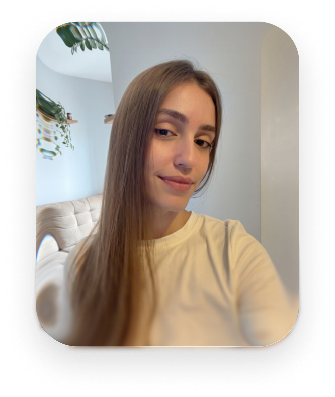
Maria Fernanda :)
Na publicidade a gente aprende a fazer de tudo um pouco, e eu fiz mesmo. Já trabalhei no atendimento, finalizei arte, editei vídeo, liderei time. E no meio disso tudo, o design e a tecnologia se tornaram protagonistas na minha trajetória.
Hoje sigo criando para o digital e levo comigo o que a profissão me ensinou de melhor: entender as pessoas antes de criar qualquer coisa.
Então, boas-vindas ao meu portfólio! Nas próximas páginas, um pouco do que eu crio e de como eu penso.
design
ID Visual & Social Media
ArriscLoja de roupas Fitness
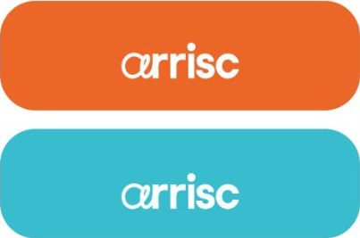
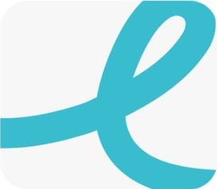
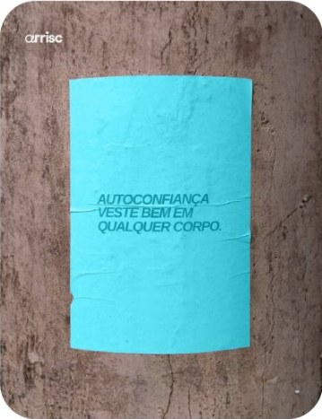
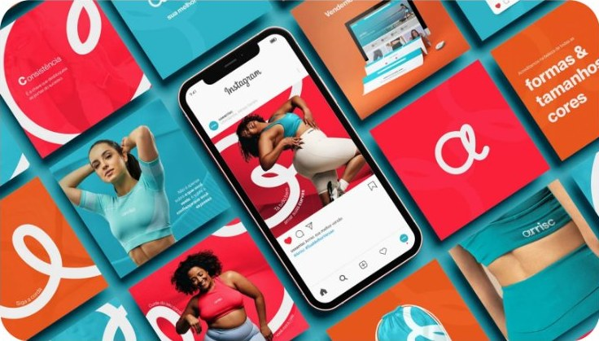
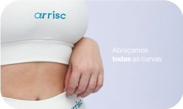
TianaPsicomotricista Infantil
Os pilares da Psicomotricidade
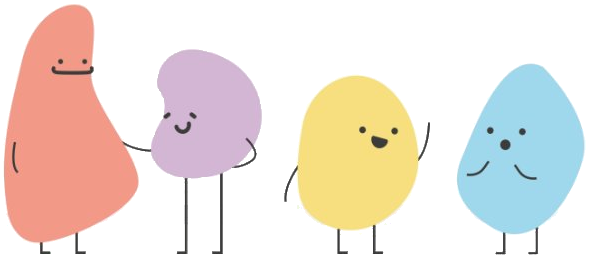
- PipoMotor
- TecoEmocional
- NinaSocial
- LunaCognitivo
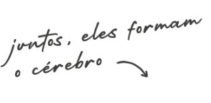
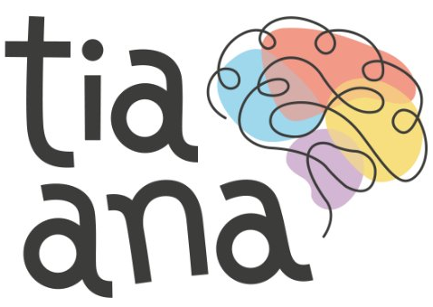
CasittaDecoração
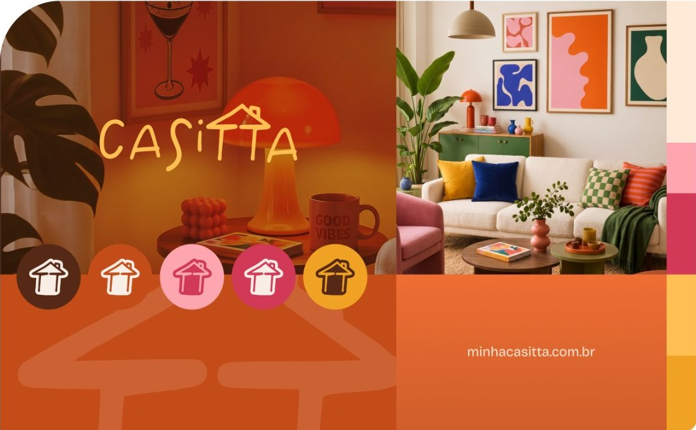
audiovisual & motion
Edição, finalização de vídeos e Motion Graphics
Campanha Eleitoral 2026Deputado Federal e Estadual
ux/ui
Sites e sistemas
SitesE-commerce, institucional, landing pages
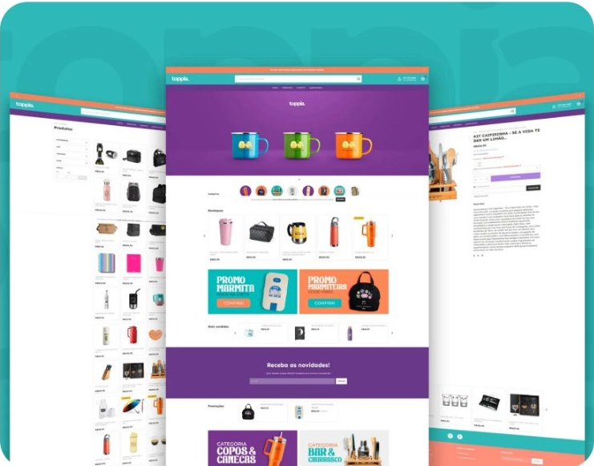
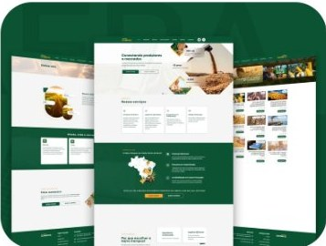
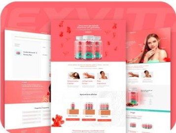
SistemaPlataforma Operacional de Produção
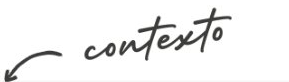
A empresa controlava todo o fluxo de pedidos com folhas impressas e um ERP que não conversava entre as áreas. O resultado eram erros operacionais, falhas nas entregas, falta de visibilidade sobre o andamento dos pedidos e gasto mensal com papel, um custo financeiro e ambiental.
Propus a criação de um sistema que integrasse todas as áreas em um só lugar, para que cada pedido fosse acompanhado do início ao fim, com todo mundo olhando para a mesma informação.
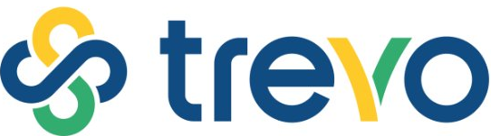
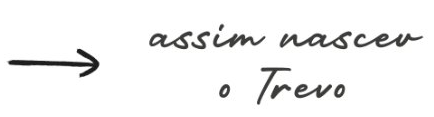
Estive à frente do design das telas e da estratégia do projeto. Trabalhei junto à diretoria em todas as etapas, da ideia à implementação, ajudando a definir prioridades, fluxos e encaminhamentos.
Além de organizar a produção, o Trevo se tornou um canal de comunicação entre as áreas, conectando as equipes e centralizando informações que antes se perdiam no papel. O sistema segue em uso até hoje, com cerca de 60 usuários, e continua sendo adaptado e melhorado pela empresa, mesmo depois da minha saída.
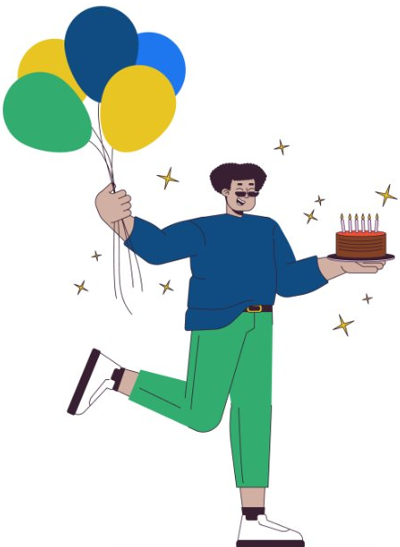
Por questões de confidencialidade, as telas do sistema não podem ser exibidas.
curtiu meu trabalho? :)
Estou disponível para uma nova oportunidade, se meu trabalho fez sentido pra você, é só entrar em contato.